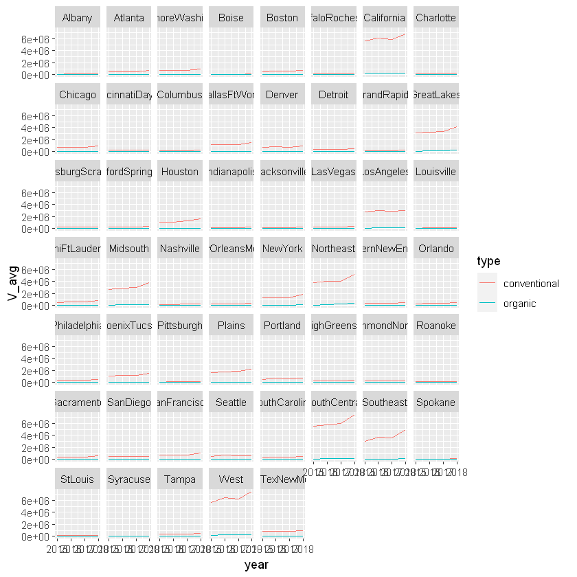
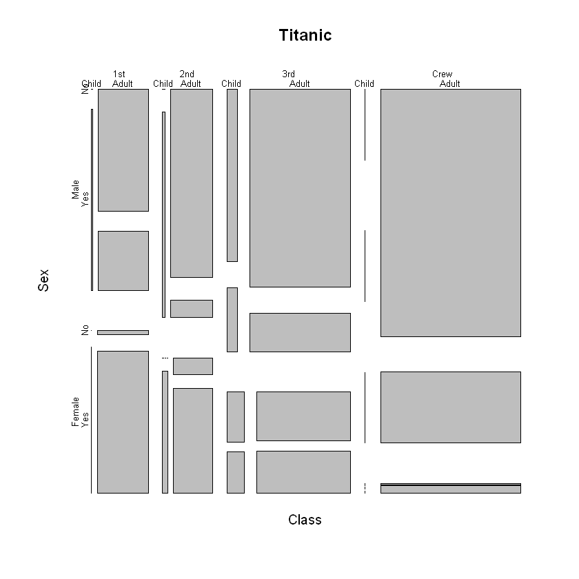

빅데이터 시각화 중간고사 대비 정리 3
빅데이터 시각화 중간고사 대비 정리하기 3
blood.type1 =c("A","B","O","AB")
blood.type2=factor(c("A","B","O","AB"))
blood.type1
blood.type2
<ol class=list-inline> <li>‘A’</li> <li>‘B’</li> <li>‘O’</li> <li>‘AB’</li> </ol>
<ol class=list-inline> <li>A</li> <li>B</li> <li>O</li> <li>AB</li> </ol>
is.character(blood.type1)
is.character(blood.type2)
TRUE
FALSE
is.factor(blood.type1)
is.factor(blood.type2)# factor true
FALSE
TRUE
x = c(1:10)
x=x[seq(2,length(x),2)]
x
<ol class=list-inline> <li>2</li> <li>4</li> <li>6</li> <li>8</li> <li>10</li> </ol>
x=array(1:24,c(4,6))
x
x=x[,seq(1,dim(x)[2],2)]
x
| 1 | 5 | 9 | 13 | 17 | 21 |
| 2 | 6 | 10 | 14 | 18 | 22 |
| 3 | 7 | 11 | 15 | 19 | 23 |
| 4 | 8 | 12 | 16 | 20 | 24 |
| 1 | 9 | 17 |
| 2 | 10 | 18 |
| 3 | 11 | 19 |
| 4 | 12 | 20 |
#BMI 계산기
BMI = function(height,weight){
height = height/100
bmi = weight /height^2
return(bmi)
}
BMI(175,65)
21.2244897959184
#NA(결측치)데이터 처리
data <- c(10,20,30,NA,6,3,NA)
data
mean(data)
mean(data, na.rm = T)#NA값을 지워야지 mean값나옴
<ol class=list-inline> <li>10</li> <li>20</li> <li>30</li> <li><NA></li> <li>6</li> <li>3</li> <li><NA></li> </ol>
<NA>
13.8
#벡터 for
score <- c(85,94,96)
name <- c("홍길동","이순신","강감찬")
i<-1
for (s in score) {
cat(name[i],"->",s,"\n")
i<-i+1
}
#실행결과
#홍길동 -> 85
#이순신 -> 94
#강감찬 -> 96
홍길동 -> 85
이순신 -> 94
강감찬 -> 96
i=0
while (i<10) {
i<-i+1
print(i)
}
[1] 1
[1] 2
[1] 3
[1] 4
[1] 5
[1] 6
[1] 7
[1] 8
[1] 9
[1] 10
#학점 구하기
score<-scan()
score<-c(80)
if(score>=90){
result="A학점"
}else if(score >=80){
result="B학점"
}else if(score>=70){
result="C학점"
}else if(score>=60){
result="D학점"
}else{
result="F학점"
}
cat("당신의 학점은:",result)
print(result)
당신의 학점은: B학점[1] "B학점"
#ifelse "노력" "우수" "우수" "노력"
score <-c(75,95,85,65)
score
ifelse(score>=80,"우수","노력")
<ol class=list-inline> <li>75</li> <li>95</li> <li>85</li> <li>65</li> </ol>
<ol class=list-inline> <li>‘노력’</li> <li>‘우수’</li> <li>‘우수’</li> <li>‘노력’</li> </ol>
#숫자 대소 관계 비교 함수 2개의 숫자중 큰수 출력
mymax <- function(x,y){
num.max <- x
if(y>x){
num.max <-y
}
return(num.max)
}
mymax(10,15)
mymax(20,15)
15
20
#data.frame (데이터 프레임)
students <- c("John", "Mary", "Ethan", "Dora") #문자열벡터
test.results <- c(76, 82, 84, 67) #숫자벡터
test.grade <- c("B", "A", "A", "C") #문자열벡터
third.class.df <- data.frame(students, test.results, test.grade) #데이터 프레임 생성
third.class.df
| students | test.results | test.grade |
|---|---|---|
| John | 76 | B |
| Mary | 82 | A |
| Ethan | 84 | A |
| Dora | 67 | C |
ncol(third.class.df)
nrow(third.class.df)
3
4
#행이름 지정
rownames(third.class.df) <- c("a transfer1", "a transfer2", "a transfer3", "a transfer4")
third.class.df
| students | test.results | test.grade | |
|---|---|---|---|
| a transfer1 | John | 76 | B |
| a transfer2 | Mary | 82 | A |
| a transfer3 | Ethan | 84 | A |
| a transfer4 | Dora | 67 | C |
#열추가 (cbind)
student_Id <-c("333","111","222","444")
third.class.df<- cbind(third.class.df,student_Id)
third.class.df
| students | test.results | test.grade | student_Id | |
|---|---|---|---|---|
| a transfer1 | John | 76 | B | 333 |
| a transfer2 | Mary | 82 | A | 111 |
| a transfer3 | Ethan | 84 | A | 222 |
| a transfer4 | Dora | 67 | C | 444 |
#행추가(rbind)
TED<- c("Ted",70,"B","012312")
third.class.df<- rbind(third.class.df,TED)
third.class.df
Warning message in `[<-.factor`(`*tmp*`, ri, value = "Ted"):
"invalid factor level, NA generated"Warning message in `[<-.factor`(`*tmp*`, ri, value = "012312"):
"invalid factor level, NA generated"
| students | test.results | test.grade | student_Id | |
|---|---|---|---|---|
| a transfer1 | John | 76 | B | 333 |
| a transfer2 | Mary | 82 | A | 111 |
| a transfer3 | Ethan | 84 | A | 222 |
| a transfer4 | Dora | 67 | C | 444 |
| 5 | NA | 70 | B | NA |
#데이터 프레임 열 제거하기
third.class.df[,-3] #3번째 열만 제거
third.class.df
| students | test.results | student_Id | |
|---|---|---|---|
| a transfer1 | John | 76 | 333 |
| a transfer2 | Mary | 82 | 111 |
| a transfer3 | Ethan | 84 | 222 |
| a transfer4 | Dora | 67 | 444 |
| 5 | NA | 70 | NA |
| students | test.results | test.grade | student_Id | |
|---|---|---|---|---|
| a transfer1 | John | 76 | B | 333 |
| a transfer2 | Mary | 82 | A | 111 |
| a transfer3 | Ethan | 84 | A | 222 |
| a transfer4 | Dora | 67 | C | 444 |
| 5 | NA | 70 | B | NA |
#데이터 프레임 열 제거하기 (subset())
subset(third.class.df,select = -c(students))
| test.results | test.grade | student_Id | |
|---|---|---|---|
| a transfer1 | 76 | B | 333 |
| a transfer2 | 82 | A | 111 |
| a transfer3 | 84 | A | 222 |
| a transfer4 | 67 | C | 444 |
| 5 | 70 | B | NA |
#iris 데이터셋
iris
| Sepal.Length | Sepal.Width | Petal.Length | Petal.Width | Species |
|---|---|---|---|---|
| 5.1 | 3.5 | 1.4 | 0.2 | setosa |
| 4.9 | 3.0 | 1.4 | 0.2 | setosa |
| 4.7 | 3.2 | 1.3 | 0.2 | setosa |
| 4.6 | 3.1 | 1.5 | 0.2 | setosa |
| 5.0 | 3.6 | 1.4 | 0.2 | setosa |
| 5.4 | 3.9 | 1.7 | 0.4 | setosa |
| 4.6 | 3.4 | 1.4 | 0.3 | setosa |
| 5.0 | 3.4 | 1.5 | 0.2 | setosa |
| 4.4 | 2.9 | 1.4 | 0.2 | setosa |
| 4.9 | 3.1 | 1.5 | 0.1 | setosa |
| 5.4 | 3.7 | 1.5 | 0.2 | setosa |
| 4.8 | 3.4 | 1.6 | 0.2 | setosa |
| 4.8 | 3.0 | 1.4 | 0.1 | setosa |
| 4.3 | 3.0 | 1.1 | 0.1 | setosa |
| 5.8 | 4.0 | 1.2 | 0.2 | setosa |
| 5.7 | 4.4 | 1.5 | 0.4 | setosa |
| 5.4 | 3.9 | 1.3 | 0.4 | setosa |
| 5.1 | 3.5 | 1.4 | 0.3 | setosa |
| 5.7 | 3.8 | 1.7 | 0.3 | setosa |
| 5.1 | 3.8 | 1.5 | 0.3 | setosa |
| 5.4 | 3.4 | 1.7 | 0.2 | setosa |
| 5.1 | 3.7 | 1.5 | 0.4 | setosa |
| 4.6 | 3.6 | 1.0 | 0.2 | setosa |
| 5.1 | 3.3 | 1.7 | 0.5 | setosa |
| 4.8 | 3.4 | 1.9 | 0.2 | setosa |
| 5.0 | 3.0 | 1.6 | 0.2 | setosa |
| 5.0 | 3.4 | 1.6 | 0.4 | setosa |
| 5.2 | 3.5 | 1.5 | 0.2 | setosa |
| 5.2 | 3.4 | 1.4 | 0.2 | setosa |
| 4.7 | 3.2 | 1.6 | 0.2 | setosa |
| ... | ... | ... | ... | ... |
| 6.9 | 3.2 | 5.7 | 2.3 | virginica |
| 5.6 | 2.8 | 4.9 | 2.0 | virginica |
| 7.7 | 2.8 | 6.7 | 2.0 | virginica |
| 6.3 | 2.7 | 4.9 | 1.8 | virginica |
| 6.7 | 3.3 | 5.7 | 2.1 | virginica |
| 7.2 | 3.2 | 6.0 | 1.8 | virginica |
| 6.2 | 2.8 | 4.8 | 1.8 | virginica |
| 6.1 | 3.0 | 4.9 | 1.8 | virginica |
| 6.4 | 2.8 | 5.6 | 2.1 | virginica |
| 7.2 | 3.0 | 5.8 | 1.6 | virginica |
| 7.4 | 2.8 | 6.1 | 1.9 | virginica |
| 7.9 | 3.8 | 6.4 | 2.0 | virginica |
| 6.4 | 2.8 | 5.6 | 2.2 | virginica |
| 6.3 | 2.8 | 5.1 | 1.5 | virginica |
| 6.1 | 2.6 | 5.6 | 1.4 | virginica |
| 7.7 | 3.0 | 6.1 | 2.3 | virginica |
| 6.3 | 3.4 | 5.6 | 2.4 | virginica |
| 6.4 | 3.1 | 5.5 | 1.8 | virginica |
| 6.0 | 3.0 | 4.8 | 1.8 | virginica |
| 6.9 | 3.1 | 5.4 | 2.1 | virginica |
| 6.7 | 3.1 | 5.6 | 2.4 | virginica |
| 6.9 | 3.1 | 5.1 | 2.3 | virginica |
| 5.8 | 2.7 | 5.1 | 1.9 | virginica |
| 6.8 | 3.2 | 5.9 | 2.3 | virginica |
| 6.7 | 3.3 | 5.7 | 2.5 | virginica |
| 6.7 | 3.0 | 5.2 | 2.3 | virginica |
| 6.3 | 2.5 | 5.0 | 1.9 | virginica |
| 6.5 | 3.0 | 5.2 | 2.0 | virginica |
| 6.2 | 3.4 | 5.4 | 2.3 | virginica |
| 5.9 | 3.0 | 5.1 | 1.8 | virginica |
iris[,c(1:2)]
| Sepal.Length | Sepal.Width |
|---|---|
| 5.1 | 3.5 |
| 4.9 | 3.0 |
| 4.7 | 3.2 |
| 4.6 | 3.1 |
| 5.0 | 3.6 |
| 5.4 | 3.9 |
| 4.6 | 3.4 |
| 5.0 | 3.4 |
| 4.4 | 2.9 |
| 4.9 | 3.1 |
| 5.4 | 3.7 |
| 4.8 | 3.4 |
| 4.8 | 3.0 |
| 4.3 | 3.0 |
| 5.8 | 4.0 |
| 5.7 | 4.4 |
| 5.4 | 3.9 |
| 5.1 | 3.5 |
| 5.7 | 3.8 |
| 5.1 | 3.8 |
| 5.4 | 3.4 |
| 5.1 | 3.7 |
| 4.6 | 3.6 |
| 5.1 | 3.3 |
| 4.8 | 3.4 |
| 5.0 | 3.0 |
| 5.0 | 3.4 |
| 5.2 | 3.5 |
| 5.2 | 3.4 |
| 4.7 | 3.2 |
| ... | ... |
| 6.9 | 3.2 |
| 5.6 | 2.8 |
| 7.7 | 2.8 |
| 6.3 | 2.7 |
| 6.7 | 3.3 |
| 7.2 | 3.2 |
| 6.2 | 2.8 |
| 6.1 | 3.0 |
| 6.4 | 2.8 |
| 7.2 | 3.0 |
| 7.4 | 2.8 |
| 7.9 | 3.8 |
| 6.4 | 2.8 |
| 6.3 | 2.8 |
| 6.1 | 2.6 |
| 7.7 | 3.0 |
| 6.3 | 3.4 |
| 6.4 | 3.1 |
| 6.0 | 3.0 |
| 6.9 | 3.1 |
| 6.7 | 3.1 |
| 6.9 | 3.1 |
| 5.8 | 2.7 |
| 6.8 | 3.2 |
| 6.7 | 3.3 |
| 6.7 | 3.0 |
| 6.3 | 2.5 |
| 6.5 | 3.0 |
| 6.2 | 3.4 |
| 5.9 | 3.0 |
iris[,c(1,3,5)]#1,3,5열의 모든 데이터
| Sepal.Length | Petal.Length | Species |
|---|---|---|
| 5.1 | 1.4 | setosa |
| 4.9 | 1.4 | setosa |
| 4.7 | 1.3 | setosa |
| 4.6 | 1.5 | setosa |
| 5.0 | 1.4 | setosa |
| 5.4 | 1.7 | setosa |
| 4.6 | 1.4 | setosa |
| 5.0 | 1.5 | setosa |
| 4.4 | 1.4 | setosa |
| 4.9 | 1.5 | setosa |
| 5.4 | 1.5 | setosa |
| 4.8 | 1.6 | setosa |
| 4.8 | 1.4 | setosa |
| 4.3 | 1.1 | setosa |
| 5.8 | 1.2 | setosa |
| 5.7 | 1.5 | setosa |
| 5.4 | 1.3 | setosa |
| 5.1 | 1.4 | setosa |
| 5.7 | 1.7 | setosa |
| 5.1 | 1.5 | setosa |
| 5.4 | 1.7 | setosa |
| 5.1 | 1.5 | setosa |
| 4.6 | 1.0 | setosa |
| 5.1 | 1.7 | setosa |
| 4.8 | 1.9 | setosa |
| 5.0 | 1.6 | setosa |
| 5.0 | 1.6 | setosa |
| 5.2 | 1.5 | setosa |
| 5.2 | 1.4 | setosa |
| 4.7 | 1.6 | setosa |
| ... | ... | ... |
| 6.9 | 5.7 | virginica |
| 5.6 | 4.9 | virginica |
| 7.7 | 6.7 | virginica |
| 6.3 | 4.9 | virginica |
| 6.7 | 5.7 | virginica |
| 7.2 | 6.0 | virginica |
| 6.2 | 4.8 | virginica |
| 6.1 | 4.9 | virginica |
| 6.4 | 5.6 | virginica |
| 7.2 | 5.8 | virginica |
| 7.4 | 6.1 | virginica |
| 7.9 | 6.4 | virginica |
| 6.4 | 5.6 | virginica |
| 6.3 | 5.1 | virginica |
| 6.1 | 5.6 | virginica |
| 7.7 | 6.1 | virginica |
| 6.3 | 5.6 | virginica |
| 6.4 | 5.5 | virginica |
| 6.0 | 4.8 | virginica |
| 6.9 | 5.4 | virginica |
| 6.7 | 5.6 | virginica |
| 6.9 | 5.1 | virginica |
| 5.8 | 5.1 | virginica |
| 6.8 | 5.9 | virginica |
| 6.7 | 5.7 | virginica |
| 6.7 | 5.2 | virginica |
| 6.3 | 5.0 | virginica |
| 6.5 | 5.2 | virginica |
| 6.2 | 5.4 | virginica |
| 5.9 | 5.1 | virginica |
iris[,c("Species")]#컬럼이름으로 데이터 조회
<ol class=list-inline> <li>setosa</li> <li>setosa</li> <li>setosa</li> <li>setosa</li> <li>setosa</li> <li>setosa</li> <li>setosa</li> <li>setosa</li> <li>setosa</li> <li>setosa</li> <li>setosa</li> <li>setosa</li> <li>setosa</li> <li>setosa</li> <li>setosa</li> <li>setosa</li> <li>setosa</li> <li>setosa</li> <li>setosa</li> <li>setosa</li> <li>setosa</li> <li>setosa</li> <li>setosa</li> <li>setosa</li> <li>setosa</li> <li>setosa</li> <li>setosa</li> <li>setosa</li> <li>setosa</li> <li>setosa</li> <li>setosa</li> <li>setosa</li> <li>setosa</li> <li>setosa</li> <li>setosa</li> <li>setosa</li> <li>setosa</li> <li>setosa</li> <li>setosa</li> <li>setosa</li> <li>setosa</li> <li>setosa</li> <li>setosa</li> <li>setosa</li> <li>setosa</li> <li>setosa</li> <li>setosa</li> <li>setosa</li> <li>setosa</li> <li>setosa</li> <li>versicolor</li> <li>versicolor</li> <li>versicolor</li> <li>versicolor</li> <li>versicolor</li> <li>versicolor</li> <li>versicolor</li> <li>versicolor</li> <li>versicolor</li> <li>versicolor</li> <li>versicolor</li> <li>versicolor</li> <li>versicolor</li> <li>versicolor</li> <li>versicolor</li> <li>versicolor</li> <li>versicolor</li> <li>versicolor</li> <li>versicolor</li> <li>versicolor</li> <li>versicolor</li> <li>versicolor</li> <li>versicolor</li> <li>versicolor</li> <li>versicolor</li> <li>versicolor</li> <li>versicolor</li> <li>versicolor</li> <li>versicolor</li> <li>versicolor</li> <li>versicolor</li> <li>versicolor</li> <li>versicolor</li> <li>versicolor</li> <li>versicolor</li> <li>versicolor</li> <li>versicolor</li> <li>versicolor</li> <li>versicolor</li> <li>versicolor</li> <li>versicolor</li> <li>versicolor</li> <li>versicolor</li> <li>versicolor</li> <li>versicolor</li> <li>versicolor</li> <li>versicolor</li> <li>versicolor</li> <li>versicolor</li> <li>versicolor</li> <li>virginica</li> <li>virginica</li> <li>virginica</li> <li>virginica</li> <li>virginica</li> <li>virginica</li> <li>virginica</li> <li>virginica</li> <li>virginica</li> <li>virginica</li> <li>virginica</li> <li>virginica</li> <li>virginica</li> <li>virginica</li> <li>virginica</li> <li>virginica</li> <li>virginica</li> <li>virginica</li> <li>virginica</li> <li>virginica</li> <li>virginica</li> <li>virginica</li> <li>virginica</li> <li>virginica</li> <li>virginica</li> <li>virginica</li> <li>virginica</li> <li>virginica</li> <li>virginica</li> <li>virginica</li> <li>virginica</li> <li>virginica</li> <li>virginica</li> <li>virginica</li> <li>virginica</li> <li>virginica</li> <li>virginica</li> <li>virginica</li> <li>virginica</li> <li>virginica</li> <li>virginica</li> <li>virginica</li> <li>virginica</li> <li>virginica</li> <li>virginica</li> <li>virginica</li> <li>virginica</li> <li>virginica</li> <li>virginica</li> <li>virginica</li> </ol>
#apply 함수적용
apply(iris[,1:4],1,mean)#row방향으로 평균을 구하는 함수
apply(iris[,1:4],2,mean) #col 방향으로 평균을 구하는 함수
<ol class=list-inline> <li>2.55</li> <li>2.375</li> <li>2.35</li> <li>2.35</li> <li>2.55</li> <li>2.85</li> <li>2.425</li> <li>2.525</li> <li>2.225</li> <li>2.4</li> <li>2.7</li> <li>2.5</li> <li>2.325</li> <li>2.125</li> <li>2.8</li> <li>3</li> <li>2.75</li> <li>2.575</li> <li>2.875</li> <li>2.675</li> <li>2.675</li> <li>2.675</li> <li>2.35</li> <li>2.65</li> <li>2.575</li> <li>2.45</li> <li>2.6</li> <li>2.6</li> <li>2.55</li> <li>2.425</li> <li>2.425</li> <li>2.675</li> <li>2.725</li> <li>2.825</li> <li>2.425</li> <li>2.4</li> <li>2.625</li> <li>2.5</li> <li>2.225</li> <li>2.55</li> <li>2.525</li> <li>2.1</li> <li>2.275</li> <li>2.675</li> <li>2.8</li> <li>2.375</li> <li>2.675</li> <li>2.35</li> <li>2.675</li> <li>2.475</li> <li>4.075</li> <li>3.9</li> <li>4.1</li> <li>3.275</li> <li>3.85</li> <li>3.575</li> <li>3.975</li> <li>2.9</li> <li>3.85</li> <li>3.3</li> <li>2.875</li> <li>3.65</li> <li>3.3</li> <li>3.775</li> <li>3.35</li> <li>3.9</li> <li>3.65</li> <li>3.4</li> <li>3.6</li> <li>3.275</li> <li>3.925</li> <li>3.55</li> <li>3.8</li> <li>3.7</li> <li>3.725</li> <li>3.85</li> <li>3.95</li> <li>4.1</li> <li>3.725</li> <li>3.2</li> <li>3.2</li> <li>3.15</li> <li>3.4</li> <li>3.85</li> <li>3.6</li> <li>3.875</li> <li>4</li> <li>3.575</li> <li>3.5</li> <li>3.325</li> <li>3.425</li> <li>3.775</li> <li>3.4</li> <li>2.9</li> <li>3.45</li> <li>3.525</li> <li>3.525</li> <li>3.675</li> <li>2.925</li> <li>3.475</li> <li>4.525</li> <li>3.875</li> <li>4.525</li> <li>4.15</li> <li>4.375</li> <li>4.825</li> <li>3.4</li> <li>4.575</li> <li>4.2</li> <li>4.85</li> <li>4.2</li> <li>4.075</li> <li>4.35</li> <li>3.8</li> <li>4.025</li> <li>4.3</li> <li>4.2</li> <li>5.1</li> <li>4.875</li> <li>3.675</li> <li>4.525</li> <li>3.825</li> <li>4.8</li> <li>3.925</li> <li>4.45</li> <li>4.55</li> <li>3.9</li> <li>3.95</li> <li>4.225</li> <li>4.4</li> <li>4.55</li> <li>5.025</li> <li>4.25</li> <li>3.925</li> <li>3.925</li> <li>4.775</li> <li>4.425</li> <li>4.2</li> <li>3.9</li> <li>4.375</li> <li>4.45</li> <li>4.35</li> <li>3.875</li> <li>4.55</li> <li>4.55</li> <li>4.3</li> <li>3.925</li> <li>4.175</li> <li>4.325</li> <li>3.95</li> </ol>
<dl class=dl-horizontal> <dt>Sepal.Length</dt> <dd>5.84333333333333</dd> <dt>Sepal.Width</dt> <dd>3.05733333333333</dd> <dt>Petal.Length</dt> <dd>3.758</dd> <dt>Petal.Width</dt> <dd>1.19933333333333</dd> </dl>
#gapminder
#한 식으로 표현
library(gapminder)
gapminder
| country | continent | year | lifeExp | pop | gdpPercap |
|---|---|---|---|---|---|
| Afghanistan | Asia | 1952 | 28.801 | 8425333 | 779.4453 |
| Afghanistan | Asia | 1957 | 30.332 | 9240934 | 820.8530 |
| Afghanistan | Asia | 1962 | 31.997 | 10267083 | 853.1007 |
| Afghanistan | Asia | 1967 | 34.020 | 11537966 | 836.1971 |
| Afghanistan | Asia | 1972 | 36.088 | 13079460 | 739.9811 |
| Afghanistan | Asia | 1977 | 38.438 | 14880372 | 786.1134 |
| Afghanistan | Asia | 1982 | 39.854 | 12881816 | 978.0114 |
| Afghanistan | Asia | 1987 | 40.822 | 13867957 | 852.3959 |
| Afghanistan | Asia | 1992 | 41.674 | 16317921 | 649.3414 |
| Afghanistan | Asia | 1997 | 41.763 | 22227415 | 635.3414 |
| Afghanistan | Asia | 2002 | 42.129 | 25268405 | 726.7341 |
| Afghanistan | Asia | 2007 | 43.828 | 31889923 | 974.5803 |
| Albania | Europe | 1952 | 55.230 | 1282697 | 1601.0561 |
| Albania | Europe | 1957 | 59.280 | 1476505 | 1942.2842 |
| Albania | Europe | 1962 | 64.820 | 1728137 | 2312.8890 |
| Albania | Europe | 1967 | 66.220 | 1984060 | 2760.1969 |
| Albania | Europe | 1972 | 67.690 | 2263554 | 3313.4222 |
| Albania | Europe | 1977 | 68.930 | 2509048 | 3533.0039 |
| Albania | Europe | 1982 | 70.420 | 2780097 | 3630.8807 |
| Albania | Europe | 1987 | 72.000 | 3075321 | 3738.9327 |
| Albania | Europe | 1992 | 71.581 | 3326498 | 2497.4379 |
| Albania | Europe | 1997 | 72.950 | 3428038 | 3193.0546 |
| Albania | Europe | 2002 | 75.651 | 3508512 | 4604.2117 |
| Albania | Europe | 2007 | 76.423 | 3600523 | 5937.0295 |
| Algeria | Africa | 1952 | 43.077 | 9279525 | 2449.0082 |
| Algeria | Africa | 1957 | 45.685 | 10270856 | 3013.9760 |
| Algeria | Africa | 1962 | 48.303 | 11000948 | 2550.8169 |
| Algeria | Africa | 1967 | 51.407 | 12760499 | 3246.9918 |
| Algeria | Africa | 1972 | 54.518 | 14760787 | 4182.6638 |
| Algeria | Africa | 1977 | 58.014 | 17152804 | 4910.4168 |
| ... | ... | ... | ... | ... | ... |
| Yemen, Rep. | Asia | 1982 | 49.113 | 9657618 | 1977.5570 |
| Yemen, Rep. | Asia | 1987 | 52.922 | 11219340 | 1971.7415 |
| Yemen, Rep. | Asia | 1992 | 55.599 | 13367997 | 1879.4967 |
| Yemen, Rep. | Asia | 1997 | 58.020 | 15826497 | 2117.4845 |
| Yemen, Rep. | Asia | 2002 | 60.308 | 18701257 | 2234.8208 |
| Yemen, Rep. | Asia | 2007 | 62.698 | 22211743 | 2280.7699 |
| Zambia | Africa | 1952 | 42.038 | 2672000 | 1147.3888 |
| Zambia | Africa | 1957 | 44.077 | 3016000 | 1311.9568 |
| Zambia | Africa | 1962 | 46.023 | 3421000 | 1452.7258 |
| Zambia | Africa | 1967 | 47.768 | 3900000 | 1777.0773 |
| Zambia | Africa | 1972 | 50.107 | 4506497 | 1773.4983 |
| Zambia | Africa | 1977 | 51.386 | 5216550 | 1588.6883 |
| Zambia | Africa | 1982 | 51.821 | 6100407 | 1408.6786 |
| Zambia | Africa | 1987 | 50.821 | 7272406 | 1213.3151 |
| Zambia | Africa | 1992 | 46.100 | 8381163 | 1210.8846 |
| Zambia | Africa | 1997 | 40.238 | 9417789 | 1071.3538 |
| Zambia | Africa | 2002 | 39.193 | 10595811 | 1071.6139 |
| Zambia | Africa | 2007 | 42.384 | 11746035 | 1271.2116 |
| Zimbabwe | Africa | 1952 | 48.451 | 3080907 | 406.8841 |
| Zimbabwe | Africa | 1957 | 50.469 | 3646340 | 518.7643 |
| Zimbabwe | Africa | 1962 | 52.358 | 4277736 | 527.2722 |
| Zimbabwe | Africa | 1967 | 53.995 | 4995432 | 569.7951 |
| Zimbabwe | Africa | 1972 | 55.635 | 5861135 | 799.3622 |
| Zimbabwe | Africa | 1977 | 57.674 | 6642107 | 685.5877 |
| Zimbabwe | Africa | 1982 | 60.363 | 7636524 | 788.8550 |
| Zimbabwe | Africa | 1987 | 62.351 | 9216418 | 706.1573 |
| Zimbabwe | Africa | 1992 | 60.377 | 10704340 | 693.4208 |
| Zimbabwe | Africa | 1997 | 46.809 | 11404948 | 792.4500 |
| Zimbabwe | Africa | 2002 | 39.989 | 11926563 | 672.0386 |
| Zimbabwe | Africa | 2007 | 43.487 | 12311143 | 469.7093 |
gapminder[gapminder$country=="Croatia"&gapminder$year>1992,c("lifeExp","pop")]
#조건식 여러개를 논리 연산자로 결합
| lifeExp | pop |
|---|---|
| 73.680 | 4444595 |
| 74.876 | 4481020 |
| 75.748 | 4493312 |
#col mean 계산
apply(gapminder[gapminder$country=="Croatia",c("lifeExp","pop")],2,mean)
<dl class=dl-horizontal> <dt>lifeExp</dt> <dd>70.0559166666667</dd> <dt>pop</dt> <dd>4289916.25</dd> </dl>
#select 함수 사용하려면 dplyr 라이브러리 필수임
library(dplyr)
select(gapminder,country,year,lifeExp)
Attaching package: 'dplyr'
The following objects are masked from 'package:stats':
filter, lag
The following objects are masked from 'package:base':
intersect, setdiff, setequal, union
| country | year | lifeExp |
|---|---|---|
| Afghanistan | 1952 | 28.801 |
| Afghanistan | 1957 | 30.332 |
| Afghanistan | 1962 | 31.997 |
| Afghanistan | 1967 | 34.020 |
| Afghanistan | 1972 | 36.088 |
| Afghanistan | 1977 | 38.438 |
| Afghanistan | 1982 | 39.854 |
| Afghanistan | 1987 | 40.822 |
| Afghanistan | 1992 | 41.674 |
| Afghanistan | 1997 | 41.763 |
| Afghanistan | 2002 | 42.129 |
| Afghanistan | 2007 | 43.828 |
| Albania | 1952 | 55.230 |
| Albania | 1957 | 59.280 |
| Albania | 1962 | 64.820 |
| Albania | 1967 | 66.220 |
| Albania | 1972 | 67.690 |
| Albania | 1977 | 68.930 |
| Albania | 1982 | 70.420 |
| Albania | 1987 | 72.000 |
| Albania | 1992 | 71.581 |
| Albania | 1997 | 72.950 |
| Albania | 2002 | 75.651 |
| Albania | 2007 | 76.423 |
| Algeria | 1952 | 43.077 |
| Algeria | 1957 | 45.685 |
| Algeria | 1962 | 48.303 |
| Algeria | 1967 | 51.407 |
| Algeria | 1972 | 54.518 |
| Algeria | 1977 | 58.014 |
| ... | ... | ... |
| Yemen, Rep. | 1982 | 49.113 |
| Yemen, Rep. | 1987 | 52.922 |
| Yemen, Rep. | 1992 | 55.599 |
| Yemen, Rep. | 1997 | 58.020 |
| Yemen, Rep. | 2002 | 60.308 |
| Yemen, Rep. | 2007 | 62.698 |
| Zambia | 1952 | 42.038 |
| Zambia | 1957 | 44.077 |
| Zambia | 1962 | 46.023 |
| Zambia | 1967 | 47.768 |
| Zambia | 1972 | 50.107 |
| Zambia | 1977 | 51.386 |
| Zambia | 1982 | 51.821 |
| Zambia | 1987 | 50.821 |
| Zambia | 1992 | 46.100 |
| Zambia | 1997 | 40.238 |
| Zambia | 2002 | 39.193 |
| Zambia | 2007 | 42.384 |
| Zimbabwe | 1952 | 48.451 |
| Zimbabwe | 1957 | 50.469 |
| Zimbabwe | 1962 | 52.358 |
| Zimbabwe | 1967 | 53.995 |
| Zimbabwe | 1972 | 55.635 |
| Zimbabwe | 1977 | 57.674 |
| Zimbabwe | 1982 | 60.363 |
| Zimbabwe | 1987 | 62.351 |
| Zimbabwe | 1992 | 60.377 |
| Zimbabwe | 1997 | 46.809 |
| Zimbabwe | 2002 | 39.989 |
| Zimbabwe | 2007 | 43.487 |
#filter() 특정 샘플(행) 추출 시 사용
filter(gapminder,country=="Croatia")
| country | continent | year | lifeExp | pop | gdpPercap |
|---|---|---|---|---|---|
| Croatia | Europe | 1952 | 61.210 | 3882229 | 3119.237 |
| Croatia | Europe | 1957 | 64.770 | 3991242 | 4338.232 |
| Croatia | Europe | 1962 | 67.130 | 4076557 | 5477.890 |
| Croatia | Europe | 1967 | 68.500 | 4174366 | 6960.298 |
| Croatia | Europe | 1972 | 69.610 | 4225310 | 9164.090 |
| Croatia | Europe | 1977 | 70.640 | 4318673 | 11305.385 |
| Croatia | Europe | 1982 | 70.460 | 4413368 | 13221.822 |
| Croatia | Europe | 1987 | 71.520 | 4484310 | 13822.584 |
| Croatia | Europe | 1992 | 72.527 | 4494013 | 8447.795 |
| Croatia | Europe | 1997 | 73.680 | 4444595 | 9875.605 |
| Croatia | Europe | 2002 | 74.876 | 4481020 | 11628.389 |
| Croatia | Europe | 2007 | 75.748 | 4493312 | 14619.223 |
summarise(gapminder,pop_avg=mean(pop))
gapminder
| pop_avg |
|---|
| 29601212 |
| country | continent | year | lifeExp | pop | gdpPercap |
|---|---|---|---|---|---|
| Afghanistan | Asia | 1952 | 28.801 | 8425333 | 779.4453 |
| Afghanistan | Asia | 1957 | 30.332 | 9240934 | 820.8530 |
| Afghanistan | Asia | 1962 | 31.997 | 10267083 | 853.1007 |
| Afghanistan | Asia | 1967 | 34.020 | 11537966 | 836.1971 |
| Afghanistan | Asia | 1972 | 36.088 | 13079460 | 739.9811 |
| Afghanistan | Asia | 1977 | 38.438 | 14880372 | 786.1134 |
| Afghanistan | Asia | 1982 | 39.854 | 12881816 | 978.0114 |
| Afghanistan | Asia | 1987 | 40.822 | 13867957 | 852.3959 |
| Afghanistan | Asia | 1992 | 41.674 | 16317921 | 649.3414 |
| Afghanistan | Asia | 1997 | 41.763 | 22227415 | 635.3414 |
| Afghanistan | Asia | 2002 | 42.129 | 25268405 | 726.7341 |
| Afghanistan | Asia | 2007 | 43.828 | 31889923 | 974.5803 |
| Albania | Europe | 1952 | 55.230 | 1282697 | 1601.0561 |
| Albania | Europe | 1957 | 59.280 | 1476505 | 1942.2842 |
| Albania | Europe | 1962 | 64.820 | 1728137 | 2312.8890 |
| Albania | Europe | 1967 | 66.220 | 1984060 | 2760.1969 |
| Albania | Europe | 1972 | 67.690 | 2263554 | 3313.4222 |
| Albania | Europe | 1977 | 68.930 | 2509048 | 3533.0039 |
| Albania | Europe | 1982 | 70.420 | 2780097 | 3630.8807 |
| Albania | Europe | 1987 | 72.000 | 3075321 | 3738.9327 |
| Albania | Europe | 1992 | 71.581 | 3326498 | 2497.4379 |
| Albania | Europe | 1997 | 72.950 | 3428038 | 3193.0546 |
| Albania | Europe | 2002 | 75.651 | 3508512 | 4604.2117 |
| Albania | Europe | 2007 | 76.423 | 3600523 | 5937.0295 |
| Algeria | Africa | 1952 | 43.077 | 9279525 | 2449.0082 |
| Algeria | Africa | 1957 | 45.685 | 10270856 | 3013.9760 |
| Algeria | Africa | 1962 | 48.303 | 11000948 | 2550.8169 |
| Algeria | Africa | 1967 | 51.407 | 12760499 | 3246.9918 |
| Algeria | Africa | 1972 | 54.518 | 14760787 | 4182.6638 |
| Algeria | Africa | 1977 | 58.014 | 17152804 | 4910.4168 |
| ... | ... | ... | ... | ... | ... |
| Yemen, Rep. | Asia | 1982 | 49.113 | 9657618 | 1977.5570 |
| Yemen, Rep. | Asia | 1987 | 52.922 | 11219340 | 1971.7415 |
| Yemen, Rep. | Asia | 1992 | 55.599 | 13367997 | 1879.4967 |
| Yemen, Rep. | Asia | 1997 | 58.020 | 15826497 | 2117.4845 |
| Yemen, Rep. | Asia | 2002 | 60.308 | 18701257 | 2234.8208 |
| Yemen, Rep. | Asia | 2007 | 62.698 | 22211743 | 2280.7699 |
| Zambia | Africa | 1952 | 42.038 | 2672000 | 1147.3888 |
| Zambia | Africa | 1957 | 44.077 | 3016000 | 1311.9568 |
| Zambia | Africa | 1962 | 46.023 | 3421000 | 1452.7258 |
| Zambia | Africa | 1967 | 47.768 | 3900000 | 1777.0773 |
| Zambia | Africa | 1972 | 50.107 | 4506497 | 1773.4983 |
| Zambia | Africa | 1977 | 51.386 | 5216550 | 1588.6883 |
| Zambia | Africa | 1982 | 51.821 | 6100407 | 1408.6786 |
| Zambia | Africa | 1987 | 50.821 | 7272406 | 1213.3151 |
| Zambia | Africa | 1992 | 46.100 | 8381163 | 1210.8846 |
| Zambia | Africa | 1997 | 40.238 | 9417789 | 1071.3538 |
| Zambia | Africa | 2002 | 39.193 | 10595811 | 1071.6139 |
| Zambia | Africa | 2007 | 42.384 | 11746035 | 1271.2116 |
| Zimbabwe | Africa | 1952 | 48.451 | 3080907 | 406.8841 |
| Zimbabwe | Africa | 1957 | 50.469 | 3646340 | 518.7643 |
| Zimbabwe | Africa | 1962 | 52.358 | 4277736 | 527.2722 |
| Zimbabwe | Africa | 1967 | 53.995 | 4995432 | 569.7951 |
| Zimbabwe | Africa | 1972 | 55.635 | 5861135 | 799.3622 |
| Zimbabwe | Africa | 1977 | 57.674 | 6642107 | 685.5877 |
| Zimbabwe | Africa | 1982 | 60.363 | 7636524 | 788.8550 |
| Zimbabwe | Africa | 1987 | 62.351 | 9216418 | 706.1573 |
| Zimbabwe | Africa | 1992 | 60.377 | 10704340 | 693.4208 |
| Zimbabwe | Africa | 1997 | 46.809 | 11404948 | 792.4500 |
| Zimbabwe | Africa | 2002 | 39.989 | 11926563 | 672.0386 |
| Zimbabwe | Africa | 2007 | 43.487 | 12311143 | 469.7093 |
summarise(group_by(gapminder,continent),pop_avg=mean(pop))
| continent | pop_avg |
|---|---|
| Africa | 9916003 |
| Americas | 24504795 |
| Asia | 77038722 |
| Europe | 17169765 |
| Oceania | 8874672 |
summarise(group_by(gapminder,continent,country),pop_avg=mean(pop))
| continent | country | pop_avg |
|---|---|---|
| Africa | Algeria | 19875406.2 |
| Africa | Angola | 7309390.1 |
| Africa | Benin | 4017496.7 |
| Africa | Botswana | 971186.2 |
| Africa | Burkina Faso | 7548677.2 |
| Africa | Burundi | 4651608.3 |
| Africa | Cameroon | 9816648.4 |
| Africa | Central African Republic | 2560963.0 |
| Africa | Chad | 5329256.3 |
| Africa | Comoros | 361683.9 |
| Africa | Congo, Dem. Rep. | 32681655.2 |
| Africa | Congo, Rep. | 1923209.1 |
| Africa | Cote d'Ivoire | 9153109.5 |
| Africa | Djibouti | 260243.9 |
| Africa | Egypt | 46522774.2 |
| Africa | Equatorial Guinea | 327551.0 |
| Africa | Eritrea | 2820216.8 |
| Africa | Ethiopia | 41632518.8 |
| Africa | Gabon | 795415.4 |
| Africa | Gambia | 793138.6 |
| Africa | Ghana | 12616626.4 |
| Africa | Guinea | 5360550.7 |
| Africa | Guinea-Bissau | 882008.4 |
| Africa | Kenya | 18206250.2 |
| Africa | Lesotho | 1389696.4 |
| Africa | Liberia | 1813857.2 |
| Africa | Libya | 3166803.6 |
| Africa | Madagascar | 9902402.2 |
| Africa | Malawi | 7016377.4 |
| Africa | Mali | 7112340.1 |
| ... | ... | ... |
| Europe | Belgium | 9725118.7 |
| Europe | Bosnia and Herzegovina | 3816524.8 |
| Europe | Bulgaria | 8182985.3 |
| Europe | Croatia | 4289916.2 |
| Europe | Czech Republic | 9986262.8 |
| Europe | Denmark | 4994187.3 |
| Europe | Finland | 4771321.0 |
| Europe | France | 52952564.3 |
| Europe | Germany | 77547043.3 |
| Europe | Greece | 9424181.1 |
| Europe | Hungary | 10217645.7 |
| Europe | Iceland | 226978.1 |
| Europe | Ireland | 3340825.9 |
| Europe | Italy | 54536958.0 |
| Europe | Montenegro | 564269.7 |
| Europe | Netherlands | 13786797.9 |
| Europe | Norway | 4031441.1 |
| Europe | Poland | 34323304.4 |
| Europe | Portugal | 9586273.9 |
| Europe | Romania | 20819090.2 |
| Europe | Serbia | 8783886.8 |
| Europe | Slovak Republic | 4774507.1 |
| Europe | Slovenia | 1794381.4 |
| Europe | Spain | 35851798.4 |
| Europe | Sweden | 8220028.9 |
| Europe | Switzerland | 6384293.2 |
| Europe | Turkey | 45909008.2 |
| Europe | United Kingdom | 56087800.7 |
| Oceania | Australia | 14649312.5 |
| Oceania | New Zealand | 3100032.2 |
gapminder%>% group_by(continent,country)%>% summarise(pop_avg=mean(pop))
| continent | country | pop_avg |
|---|---|---|
| Africa | Algeria | 19875406.2 |
| Africa | Angola | 7309390.1 |
| Africa | Benin | 4017496.7 |
| Africa | Botswana | 971186.2 |
| Africa | Burkina Faso | 7548677.2 |
| Africa | Burundi | 4651608.3 |
| Africa | Cameroon | 9816648.4 |
| Africa | Central African Republic | 2560963.0 |
| Africa | Chad | 5329256.3 |
| Africa | Comoros | 361683.9 |
| Africa | Congo, Dem. Rep. | 32681655.2 |
| Africa | Congo, Rep. | 1923209.1 |
| Africa | Cote d'Ivoire | 9153109.5 |
| Africa | Djibouti | 260243.9 |
| Africa | Egypt | 46522774.2 |
| Africa | Equatorial Guinea | 327551.0 |
| Africa | Eritrea | 2820216.8 |
| Africa | Ethiopia | 41632518.8 |
| Africa | Gabon | 795415.4 |
| Africa | Gambia | 793138.6 |
| Africa | Ghana | 12616626.4 |
| Africa | Guinea | 5360550.7 |
| Africa | Guinea-Bissau | 882008.4 |
| Africa | Kenya | 18206250.2 |
| Africa | Lesotho | 1389696.4 |
| Africa | Liberia | 1813857.2 |
| Africa | Libya | 3166803.6 |
| Africa | Madagascar | 9902402.2 |
| Africa | Malawi | 7016377.4 |
| Africa | Mali | 7112340.1 |
| ... | ... | ... |
| Europe | Belgium | 9725118.7 |
| Europe | Bosnia and Herzegovina | 3816524.8 |
| Europe | Bulgaria | 8182985.3 |
| Europe | Croatia | 4289916.2 |
| Europe | Czech Republic | 9986262.8 |
| Europe | Denmark | 4994187.3 |
| Europe | Finland | 4771321.0 |
| Europe | France | 52952564.3 |
| Europe | Germany | 77547043.3 |
| Europe | Greece | 9424181.1 |
| Europe | Hungary | 10217645.7 |
| Europe | Iceland | 226978.1 |
| Europe | Ireland | 3340825.9 |
| Europe | Italy | 54536958.0 |
| Europe | Montenegro | 564269.7 |
| Europe | Netherlands | 13786797.9 |
| Europe | Norway | 4031441.1 |
| Europe | Poland | 34323304.4 |
| Europe | Portugal | 9586273.9 |
| Europe | Romania | 20819090.2 |
| Europe | Serbia | 8783886.8 |
| Europe | Slovak Republic | 4774507.1 |
| Europe | Slovenia | 1794381.4 |
| Europe | Spain | 35851798.4 |
| Europe | Sweden | 8220028.9 |
| Europe | Switzerland | 6384293.2 |
| Europe | Turkey | 45909008.2 |
| Europe | United Kingdom | 56087800.7 |
| Oceania | Australia | 14649312.5 |
| Oceania | New Zealand | 3100032.2 |
gapminder%>% group_by(continent,country)%>% summarise(pop_avg=mean(pop))
| continent | country | pop_avg |
|---|---|---|
| Africa | Algeria | 19875406.2 |
| Africa | Angola | 7309390.1 |
| Africa | Benin | 4017496.7 |
| Africa | Botswana | 971186.2 |
| Africa | Burkina Faso | 7548677.2 |
| Africa | Burundi | 4651608.3 |
| Africa | Cameroon | 9816648.4 |
| Africa | Central African Republic | 2560963.0 |
| Africa | Chad | 5329256.3 |
| Africa | Comoros | 361683.9 |
| Africa | Congo, Dem. Rep. | 32681655.2 |
| Africa | Congo, Rep. | 1923209.1 |
| Africa | Cote d'Ivoire | 9153109.5 |
| Africa | Djibouti | 260243.9 |
| Africa | Egypt | 46522774.2 |
| Africa | Equatorial Guinea | 327551.0 |
| Africa | Eritrea | 2820216.8 |
| Africa | Ethiopia | 41632518.8 |
| Africa | Gabon | 795415.4 |
| Africa | Gambia | 793138.6 |
| Africa | Ghana | 12616626.4 |
| Africa | Guinea | 5360550.7 |
| Africa | Guinea-Bissau | 882008.4 |
| Africa | Kenya | 18206250.2 |
| Africa | Lesotho | 1389696.4 |
| Africa | Liberia | 1813857.2 |
| Africa | Libya | 3166803.6 |
| Africa | Madagascar | 9902402.2 |
| Africa | Malawi | 7016377.4 |
| Africa | Mali | 7112340.1 |
| ... | ... | ... |
| Europe | Belgium | 9725118.7 |
| Europe | Bosnia and Herzegovina | 3816524.8 |
| Europe | Bulgaria | 8182985.3 |
| Europe | Croatia | 4289916.2 |
| Europe | Czech Republic | 9986262.8 |
| Europe | Denmark | 4994187.3 |
| Europe | Finland | 4771321.0 |
| Europe | France | 52952564.3 |
| Europe | Germany | 77547043.3 |
| Europe | Greece | 9424181.1 |
| Europe | Hungary | 10217645.7 |
| Europe | Iceland | 226978.1 |
| Europe | Ireland | 3340825.9 |
| Europe | Italy | 54536958.0 |
| Europe | Montenegro | 564269.7 |
| Europe | Netherlands | 13786797.9 |
| Europe | Norway | 4031441.1 |
| Europe | Poland | 34323304.4 |
| Europe | Portugal | 9586273.9 |
| Europe | Romania | 20819090.2 |
| Europe | Serbia | 8783886.8 |
| Europe | Slovak Republic | 4774507.1 |
| Europe | Slovenia | 1794381.4 |
| Europe | Spain | 35851798.4 |
| Europe | Sweden | 8220028.9 |
| Europe | Switzerland | 6384293.2 |
| Europe | Turkey | 45909008.2 |
| Europe | United Kingdom | 56087800.7 |
| Oceania | Australia | 14649312.5 |
| Oceania | New Zealand | 3100032.2 |
temp1 = filter(gapminder,country=="Croatia")
temp1
| country | continent | year | lifeExp | pop | gdpPercap |
|---|---|---|---|---|---|
| Croatia | Europe | 1952 | 61.210 | 3882229 | 3119.237 |
| Croatia | Europe | 1957 | 64.770 | 3991242 | 4338.232 |
| Croatia | Europe | 1962 | 67.130 | 4076557 | 5477.890 |
| Croatia | Europe | 1967 | 68.500 | 4174366 | 6960.298 |
| Croatia | Europe | 1972 | 69.610 | 4225310 | 9164.090 |
| Croatia | Europe | 1977 | 70.640 | 4318673 | 11305.385 |
| Croatia | Europe | 1982 | 70.460 | 4413368 | 13221.822 |
| Croatia | Europe | 1987 | 71.520 | 4484310 | 13822.584 |
| Croatia | Europe | 1992 | 72.527 | 4494013 | 8447.795 |
| Croatia | Europe | 1997 | 73.680 | 4444595 | 9875.605 |
| Croatia | Europe | 2002 | 74.876 | 4481020 | 11628.389 |
| Croatia | Europe | 2007 | 75.748 | 4493312 | 14619.223 |
temp2 = select(temp1,country,year,lifeExp)
temp2
| country | year | lifeExp |
|---|---|---|
| Croatia | 1952 | 61.210 |
| Croatia | 1957 | 64.770 |
| Croatia | 1962 | 67.130 |
| Croatia | 1967 | 68.500 |
| Croatia | 1972 | 69.610 |
| Croatia | 1977 | 70.640 |
| Croatia | 1982 | 70.460 |
| Croatia | 1987 | 71.520 |
| Croatia | 1992 | 72.527 |
| Croatia | 1997 | 73.680 |
| Croatia | 2002 | 74.876 |
| Croatia | 2007 | 75.748 |
temp3= apply(temp2[,c("lifeExp")],2,mean)
temp3
lifeExp: 70.0559166666667
# 위에 소스 한 소스로 표현 가능
gapminder %>% filter(country=="Croatia") %>% select(country,year,lifeExp) %>% summarise(lifeExp_avg=mean(lifeExp))
| lifeExp_avg |
|---|
| 70.05592 |
#avocado
avocado <- read.csv("C:/대학원자료/r로배우는데이터과학/Sources/avocado.csv",header=TRUE,sep=",")
avocado
| X | Date | AveragePrice | Total.Volume | X4046 | X4225 | X4770 | Total.Bags | Small.Bags | Large.Bags | XLarge.Bags | type | year | region |
|---|---|---|---|---|---|---|---|---|---|---|---|---|---|
| 0 | 2015-12-27 | 1.33 | 64236.62 | 1036.74 | 54454.85 | 48.16 | 8696.87 | 8603.62 | 93.25 | 0.00 | conventional | 2015 | Albany |
| 1 | 2015-12-20 | 1.35 | 54876.98 | 674.28 | 44638.81 | 58.33 | 9505.56 | 9408.07 | 97.49 | 0.00 | conventional | 2015 | Albany |
| 2 | 2015-12-13 | 0.93 | 118220.22 | 794.70 | 109149.67 | 130.50 | 8145.35 | 8042.21 | 103.14 | 0.00 | conventional | 2015 | Albany |
| 3 | 2015-12-06 | 1.08 | 78992.15 | 1132.00 | 71976.41 | 72.58 | 5811.16 | 5677.40 | 133.76 | 0.00 | conventional | 2015 | Albany |
| 4 | 2015-11-29 | 1.28 | 51039.60 | 941.48 | 43838.39 | 75.78 | 6183.95 | 5986.26 | 197.69 | 0.00 | conventional | 2015 | Albany |
| 5 | 2015-11-22 | 1.26 | 55979.78 | 1184.27 | 48067.99 | 43.61 | 6683.91 | 6556.47 | 127.44 | 0.00 | conventional | 2015 | Albany |
| 6 | 2015-11-15 | 0.99 | 83453.76 | 1368.92 | 73672.72 | 93.26 | 8318.86 | 8196.81 | 122.05 | 0.00 | conventional | 2015 | Albany |
| 7 | 2015-11-08 | 0.98 | 109428.33 | 703.75 | 101815.36 | 80.00 | 6829.22 | 6266.85 | 562.37 | 0.00 | conventional | 2015 | Albany |
| 8 | 2015-11-01 | 1.02 | 99811.42 | 1022.15 | 87315.57 | 85.34 | 11388.36 | 11104.53 | 283.83 | 0.00 | conventional | 2015 | Albany |
| 9 | 2015-10-25 | 1.07 | 74338.76 | 842.40 | 64757.44 | 113.00 | 8625.92 | 8061.47 | 564.45 | 0.00 | conventional | 2015 | Albany |
| 10 | 2015-10-18 | 1.12 | 84843.44 | 924.86 | 75595.85 | 117.07 | 8205.66 | 7877.86 | 327.80 | 0.00 | conventional | 2015 | Albany |
| 11 | 2015-10-11 | 1.28 | 64489.17 | 1582.03 | 52677.92 | 105.32 | 10123.90 | 9866.27 | 257.63 | 0.00 | conventional | 2015 | Albany |
| 12 | 2015-10-04 | 1.31 | 61007.10 | 2268.32 | 49880.67 | 101.36 | 8756.75 | 8379.98 | 376.77 | 0.00 | conventional | 2015 | Albany |
| 13 | 2015-09-27 | 0.99 | 106803.39 | 1204.88 | 99409.21 | 154.84 | 6034.46 | 5888.87 | 145.59 | 0.00 | conventional | 2015 | Albany |
| 14 | 2015-09-20 | 1.33 | 69759.01 | 1028.03 | 59313.12 | 150.50 | 9267.36 | 8489.10 | 778.26 | 0.00 | conventional | 2015 | Albany |
| 15 | 2015-09-13 | 1.28 | 76111.27 | 985.73 | 65696.86 | 142.00 | 9286.68 | 8665.19 | 621.49 | 0.00 | conventional | 2015 | Albany |
| 16 | 2015-09-06 | 1.11 | 99172.96 | 879.45 | 90062.62 | 240.79 | 7990.10 | 7762.87 | 227.23 | 0.00 | conventional | 2015 | Albany |
| 17 | 2015-08-30 | 1.07 | 105693.84 | 689.01 | 94362.67 | 335.43 | 10306.73 | 10218.93 | 87.80 | 0.00 | conventional | 2015 | Albany |
| 18 | 2015-08-23 | 1.34 | 79992.09 | 733.16 | 67933.79 | 444.78 | 10880.36 | 10745.79 | 134.57 | 0.00 | conventional | 2015 | Albany |
| 19 | 2015-08-16 | 1.33 | 80043.78 | 539.65 | 68666.01 | 394.90 | 10443.22 | 10297.68 | 145.54 | 0.00 | conventional | 2015 | Albany |
| 20 | 2015-08-09 | 1.12 | 111140.93 | 584.63 | 100961.46 | 368.95 | 9225.89 | 9116.34 | 109.55 | 0.00 | conventional | 2015 | Albany |
| 21 | 2015-08-02 | 1.45 | 75133.10 | 509.94 | 62035.06 | 741.08 | 11847.02 | 11768.52 | 78.50 | 0.00 | conventional | 2015 | Albany |
| 22 | 2015-07-26 | 1.11 | 106757.10 | 648.75 | 91949.05 | 966.61 | 13192.69 | 13061.53 | 131.16 | 0.00 | conventional | 2015 | Albany |
| 23 | 2015-07-19 | 1.26 | 96617.00 | 1042.10 | 82049.40 | 2238.02 | 11287.48 | 11103.49 | 183.99 | 0.00 | conventional | 2015 | Albany |
| 24 | 2015-07-12 | 1.05 | 124055.31 | 672.25 | 94693.52 | 4257.64 | 24431.90 | 24290.08 | 108.49 | 33.33 | conventional | 2015 | Albany |
| 25 | 2015-07-05 | 1.35 | 109252.12 | 869.45 | 72600.55 | 5883.16 | 29898.96 | 29663.19 | 235.77 | 0.00 | conventional | 2015 | Albany |
| 26 | 2015-06-28 | 1.37 | 89534.81 | 664.23 | 57545.79 | 4662.71 | 26662.08 | 26311.76 | 350.32 | 0.00 | conventional | 2015 | Albany |
| 27 | 2015-06-21 | 1.27 | 104849.39 | 804.01 | 76688.55 | 5481.18 | 21875.65 | 21662.00 | 213.65 | 0.00 | conventional | 2015 | Albany |
| 28 | 2015-06-14 | 1.32 | 89631.30 | 850.58 | 55400.94 | 4377.19 | 29002.59 | 28343.14 | 659.45 | 0.00 | conventional | 2015 | Albany |
| 29 | 2015-06-07 | 1.07 | 122743.06 | 656.71 | 99220.82 | 90.32 | 22775.21 | 22314.99 | 460.22 | 0.00 | conventional | 2015 | Albany |
| ... | ... | ... | ... | ... | ... | ... | ... | ... | ... | ... | ... | ... | ... |
| 6 | 2018-02-11 | 1.56 | 1317000.47 | 98465.26 | 270798.27 | 1839.80 | 945638.02 | 768242.42 | 177144.00 | 251.60 | organic | 2018 | TotalUS |
| 7 | 2018-02-04 | 1.53 | 1384683.41 | 117922.52 | 287724.61 | 1703.52 | 977084.84 | 774695.74 | 201878.69 | 510.41 | organic | 2018 | TotalUS |
| 8 | 2018-01-28 | 1.61 | 1336979.09 | 118616.17 | 280080.34 | 1270.61 | 936859.49 | 796104.27 | 140652.84 | 102.38 | organic | 2018 | TotalUS |
| 9 | 2018-01-21 | 1.63 | 1283987.65 | 108705.28 | 259172.13 | 1490.02 | 914409.26 | 710654.40 | 203526.59 | 228.27 | organic | 2018 | TotalUS |
| 10 | 2018-01-14 | 1.59 | 1476651.08 | 145680.62 | 323669.83 | 1580.01 | 1005593.78 | 858772.69 | 146808.97 | 12.12 | organic | 2018 | TotalUS |
| 11 | 2018-01-07 | 1.51 | 1517332.70 | 129541.43 | 296490.29 | 1289.07 | 1089861.24 | 915452.78 | 174381.57 | 26.89 | organic | 2018 | TotalUS |
| 0 | 2018-03-25 | 1.60 | 271723.08 | 26996.28 | 77861.39 | 117.56 | 166747.85 | 87108.00 | 79495.39 | 144.46 | organic | 2018 | West |
| 1 | 2018-03-18 | 1.73 | 210067.47 | 33437.98 | 47165.54 | 110.40 | 129353.55 | 73163.12 | 56020.24 | 170.19 | organic | 2018 | West |
| 2 | 2018-03-11 | 1.63 | 264691.87 | 27566.25 | 60383.57 | 276.42 | 176465.63 | 107174.93 | 69290.70 | 0.00 | organic | 2018 | West |
| 3 | 2018-03-04 | 1.46 | 347373.17 | 25990.60 | 71213.19 | 79.01 | 250090.37 | 85835.17 | 164087.33 | 167.87 | organic | 2018 | West |
| 4 | 2018-02-25 | 1.49 | 301985.61 | 34200.18 | 49139.34 | 85.58 | 218560.51 | 99989.62 | 118314.77 | 256.12 | organic | 2018 | West |
| 5 | 2018-02-18 | 1.64 | 224798.60 | 30149.00 | 38800.64 | 123.13 | 155725.83 | 120428.13 | 35257.73 | 39.97 | organic | 2018 | West |
| 6 | 2018-02-11 | 1.47 | 275248.53 | 24732.55 | 61713.53 | 243.00 | 188559.45 | 88497.05 | 99810.80 | 251.60 | organic | 2018 | West |
| 7 | 2018-02-04 | 1.41 | 283378.47 | 22474.66 | 55360.49 | 133.41 | 205409.91 | 70232.59 | 134666.91 | 510.41 | organic | 2018 | West |
| 8 | 2018-01-28 | 1.80 | 185974.53 | 22918.40 | 33051.14 | 93.52 | 129911.47 | 77822.23 | 51986.86 | 102.38 | organic | 2018 | West |
| 9 | 2018-01-21 | 1.83 | 189317.99 | 27049.44 | 33561.32 | 439.47 | 128267.76 | 76091.99 | 51947.50 | 228.27 | organic | 2018 | West |
| 10 | 2018-01-14 | 1.82 | 207999.67 | 33869.12 | 47435.14 | 433.52 | 126261.89 | 89115.78 | 37133.99 | 12.12 | organic | 2018 | West |
| 11 | 2018-01-07 | 1.48 | 297190.60 | 34734.97 | 62967.74 | 157.77 | 199330.12 | 103761.55 | 95544.39 | 24.18 | organic | 2018 | West |
| 0 | 2018-03-25 | 1.62 | 15303.40 | 2325.30 | 2171.66 | 0.00 | 10806.44 | 10569.80 | 236.64 | 0.00 | organic | 2018 | WestTexNewMexico |
| 1 | 2018-03-18 | 1.56 | 15896.38 | 2055.35 | 1499.55 | 0.00 | 12341.48 | 12114.81 | 226.67 | 0.00 | organic | 2018 | WestTexNewMexico |
| 2 | 2018-03-11 | 1.56 | 22128.42 | 2162.67 | 3194.25 | 8.93 | 16762.57 | 16510.32 | 252.25 | 0.00 | organic | 2018 | WestTexNewMexico |
| 3 | 2018-03-04 | 1.54 | 17393.30 | 1832.24 | 1905.57 | 0.00 | 13655.49 | 13401.93 | 253.56 | 0.00 | organic | 2018 | WestTexNewMexico |
| 4 | 2018-02-25 | 1.57 | 18421.24 | 1974.26 | 2482.65 | 0.00 | 13964.33 | 13698.27 | 266.06 | 0.00 | organic | 2018 | WestTexNewMexico |
| 5 | 2018-02-18 | 1.56 | 17597.12 | 1892.05 | 1928.36 | 0.00 | 13776.71 | 13553.53 | 223.18 | 0.00 | organic | 2018 | WestTexNewMexico |
| 6 | 2018-02-11 | 1.57 | 15986.17 | 1924.28 | 1368.32 | 0.00 | 12693.57 | 12437.35 | 256.22 | 0.00 | organic | 2018 | WestTexNewMexico |
| 7 | 2018-02-04 | 1.63 | 17074.83 | 2046.96 | 1529.20 | 0.00 | 13498.67 | 13066.82 | 431.85 | 0.00 | organic | 2018 | WestTexNewMexico |
| 8 | 2018-01-28 | 1.71 | 13888.04 | 1191.70 | 3431.50 | 0.00 | 9264.84 | 8940.04 | 324.80 | 0.00 | organic | 2018 | WestTexNewMexico |
| 9 | 2018-01-21 | 1.87 | 13766.76 | 1191.92 | 2452.79 | 727.94 | 9394.11 | 9351.80 | 42.31 | 0.00 | organic | 2018 | WestTexNewMexico |
| 10 | 2018-01-14 | 1.93 | 16205.22 | 1527.63 | 2981.04 | 727.01 | 10969.54 | 10919.54 | 50.00 | 0.00 | organic | 2018 | WestTexNewMexico |
| 11 | 2018-01-07 | 1.62 | 17489.58 | 2894.77 | 2356.13 | 224.53 | 12014.15 | 11988.14 | 26.01 | 0.00 | organic | 2018 | WestTexNewMexico |
str(avocado)
'data.frame': 18249 obs. of 14 variables:
$ X : int 0 1 2 3 4 5 6 7 8 9 ...
$ Date : Factor w/ 169 levels "2015-01-04","2015-01-11",..: 52 51 50 49 48 47 46 45 44 43 ...
$ AveragePrice: num 1.33 1.35 0.93 1.08 1.28 1.26 0.99 0.98 1.02 1.07 ...
$ Total.Volume: num 64237 54877 118220 78992 51040 ...
$ X4046 : num 1037 674 795 1132 941 ...
$ X4225 : num 54455 44639 109150 71976 43838 ...
$ X4770 : num 48.2 58.3 130.5 72.6 75.8 ...
$ Total.Bags : num 8697 9506 8145 5811 6184 ...
$ Small.Bags : num 8604 9408 8042 5677 5986 ...
$ Large.Bags : num 93.2 97.5 103.1 133.8 197.7 ...
$ XLarge.Bags : num 0 0 0 0 0 0 0 0 0 0 ...
$ type : Factor w/ 2 levels "conventional",..: 1 1 1 1 1 1 1 1 1 1 ...
$ year : int 2015 2015 2015 2015 2015 2015 2015 2015 2015 2015 ...
$ region : Factor w/ 54 levels "Albany","Atlanta",..: 1 1 1 1 1 1 1 1 1 1 ...
(x_avg = avocado %>% group_by(region) %>% summarise(V_avg =mean(Total.Volume),P_avg=mean(AveragePrice)))
| region | V_avg | P_avg |
|---|---|---|
| Albany | 47537.87 | 1.561036 |
| Atlanta | 262145.32 | 1.337959 |
| BaltimoreWashington | 398561.89 | 1.534231 |
| Boise | 42642.57 | 1.348136 |
| Boston | 287792.85 | 1.530888 |
| BuffaloRochester | 67936.30 | 1.516834 |
| California | 3044324.42 | 1.395325 |
| Charlotte | 105193.92 | 1.606036 |
| Chicago | 395569.05 | 1.556775 |
| CincinnatiDayton | 131721.92 | 1.209201 |
| Columbus | 88737.76 | 1.252781 |
| DallasFtWorth | 616625.11 | 1.085592 |
| Denver | 410954.25 | 1.218580 |
| Detroit | 187640.29 | 1.276095 |
| GrandRapids | 89383.83 | 1.505000 |
| GreatLakes | 1744504.58 | 1.338550 |
| HarrisburgScranton | 123694.85 | 1.513284 |
| HartfordSpringfield | 149912.83 | 1.818639 |
| Houston | 601088.37 | 1.047929 |
| Indianapolis | 89536.66 | 1.313994 |
| Jacksonville | 85177.53 | 1.510947 |
| LasVegas | 160878.42 | 1.380917 |
| LosAngeles | 1502652.51 | 1.216006 |
| Louisville | 47624.27 | 1.286686 |
| MiamiFtLauderdale | 288974.04 | 1.428491 |
| Midsouth | 1503992.18 | 1.404763 |
| Nashville | 105361.21 | 1.212101 |
| NewOrleansMobile | 135192.71 | 1.304793 |
| NewYork | 712231.15 | 1.727574 |
| Northeast | 2110298.55 | 1.601923 |
| NorthernNewEngland | 211635.78 | 1.477396 |
| Orlando | 173552.38 | 1.506213 |
| Philadelphia | 212540.82 | 1.632130 |
| PhoenixTucson | 578826.37 | 1.224438 |
| Pittsburgh | 55640.08 | 1.364320 |
| Plains | 920676.12 | 1.436509 |
| Portland | 327077.55 | 1.317722 |
| RaleighGreensboro | 142611.63 | 1.555118 |
| RichmondNorfolk | 124943.35 | 1.291331 |
| Roanoke | 74088.79 | 1.247929 |
| Sacramento | 222377.95 | 1.621568 |
| SanDiego | 265656.57 | 1.398166 |
| SanFrancisco | 401864.47 | 1.804201 |
| Seattle | 323118.87 | 1.442574 |
| SouthCarolina | 179744.89 | 1.403284 |
| SouthCentral | 2991951.54 | 1.101243 |
| Southeast | 1820231.98 | 1.398018 |
| Spokane | 46051.11 | 1.445592 |
| StLouis | 94890.04 | 1.430621 |
| Syracuse | 32374.76 | 1.520325 |
| Tampa | 195279.70 | 1.408846 |
| TotalUS | 17351302.31 | 1.319024 |
| West | 3215322.95 | 1.272219 |
| WestTexNewMexico | 431408.48 | 1.261701 |
(x_avg = avocado %>% group_by(region,year,type) %>% summarise(V_avg =mean(Total.Volume),P_avg=mean(AveragePrice)))
| region | year | type | V_avg | P_avg |
|---|---|---|---|---|
| Albany | 2015 | conventional | 76208.734 | 1.1719231 |
| Albany | 2015 | organic | 1289.274 | 1.9055769 |
| Albany | 2016 | conventional | 99453.155 | 1.3457692 |
| Albany | 2016 | organic | 1784.068 | 1.7221154 |
| Albany | 2017 | conventional | 95778.543 | 1.5264151 |
| Albany | 2017 | organic | 2930.547 | 1.7492453 |
| Albany | 2018 | conventional | 124160.870 | 1.3433333 |
| Albany | 2018 | organic | 4337.977 | 1.5283333 |
| Atlanta | 2015 | conventional | 440346.444 | 1.0523077 |
| Atlanta | 2015 | organic | 6416.981 | 1.7088462 |
| Atlanta | 2016 | conventional | 533746.336 | 0.9728846 |
| Atlanta | 2016 | organic | 11001.324 | 1.4553846 |
| Atlanta | 2017 | conventional | 527794.842 | 1.1924528 |
| Atlanta | 2017 | organic | 15886.667 | 1.6650943 |
| Atlanta | 2018 | conventional | 669620.026 | 1.0100000 |
| Atlanta | 2018 | organic | 16331.845 | 1.5675000 |
| BaltimoreWashington | 2015 | conventional | 768141.489 | 1.1680769 |
| BaltimoreWashington | 2015 | organic | 13504.271 | 1.5696154 |
| BaltimoreWashington | 2016 | conventional | 768130.302 | 1.3565385 |
| BaltimoreWashington | 2016 | organic | 18288.973 | 1.8186538 |
| BaltimoreWashington | 2017 | conventional | 741746.089 | 1.5147170 |
| BaltimoreWashington | 2017 | organic | 32133.807 | 1.8441509 |
| BaltimoreWashington | 2018 | conventional | 962241.631 | 1.3008333 |
| BaltimoreWashington | 2018 | organic | 51000.286 | 1.4558333 |
| Boise | 2015 | conventional | 70885.753 | 1.0540385 |
| Boise | 2015 | organic | 1890.350 | 1.6934615 |
| Boise | 2016 | conventional | 86871.986 | 0.8782692 |
| Boise | 2016 | organic | 2618.582 | 1.4055769 |
| Boise | 2017 | conventional | 87060.044 | 1.2681132 |
| Boise | 2017 | organic | 2761.867 | 1.7171698 |
| ... | ... | ... | ... | ... |
| Tampa | 2016 | conventional | 412223.563 | 1.0982692 |
| Tampa | 2016 | organic | 4713.925 | 1.4307692 |
| Tampa | 2017 | conventional | 382659.561 | 1.4139623 |
| Tampa | 2017 | organic | 5078.875 | 1.8247170 |
| Tampa | 2018 | conventional | 545088.634 | 1.2091667 |
| Tampa | 2018 | organic | 8415.949 | 1.4525000 |
| TotalUS | 2015 | conventional | 31224729.152 | 1.0125000 |
| TotalUS | 2015 | organic | 645563.567 | 1.5023077 |
| TotalUS | 2016 | conventional | 34043449.788 | 1.0467308 |
| TotalUS | 2016 | organic | 940379.881 | 1.4803846 |
| TotalUS | 2017 | conventional | 33995658.136 | 1.2216981 |
| TotalUS | 2017 | organic | 1187239.286 | 1.6515094 |
| TotalUS | 2018 | conventional | 42125533.352 | 1.0600000 |
| TotalUS | 2018 | organic | 1510487.833 | 1.5541667 |
| West | 2015 | conventional | 5655313.570 | 0.9400000 |
| West | 2015 | organic | 203731.038 | 1.5355769 |
| West | 2016 | conventional | 6404891.888 | 0.9157692 |
| West | 2016 | organic | 221595.324 | 1.4459615 |
| West | 2017 | conventional | 6279482.459 | 1.0983019 |
| West | 2017 | organic | 230978.222 | 1.6816981 |
| West | 2018 | conventional | 7451444.618 | 0.9808333 |
| West | 2018 | organic | 254979.133 | 1.6133333 |
| WestTexNewMexico | 2015 | conventional | 789495.137 | 0.7715385 |
| WestTexNewMexico | 2015 | organic | 9220.608 | 1.7566667 |
| WestTexNewMexico | 2016 | conventional | 824285.770 | 0.8465385 |
| WestTexNewMexico | 2016 | organic | 18164.838 | 1.6467308 |
| WestTexNewMexico | 2017 | conventional | 876801.092 | 0.9035849 |
| WestTexNewMexico | 2017 | organic | 18022.184 | 1.6743137 |
| WestTexNewMexico | 2018 | conventional | 966639.193 | 0.8575000 |
| WestTexNewMexico | 2018 | organic | 16762.538 | 1.6450000 |
library(ggplot2)
x_avg%>% filter(region!="TotalUS")%>% ggplot(aes(year,V_avg,col=type))+geom_line() + facet_wrap(~region)

arrange(x_avg,desc(V_avg))
| region | year | type | V_avg | P_avg |
|---|---|---|---|---|
| TotalUS | 2018 | conventional | 42125533 | 1.0600000 |
| TotalUS | 2016 | conventional | 34043450 | 1.0467308 |
| TotalUS | 2017 | conventional | 33995658 | 1.2216981 |
| TotalUS | 2015 | conventional | 31224729 | 1.0125000 |
| SouthCentral | 2018 | conventional | 7465557 | 0.8058333 |
| West | 2018 | conventional | 7451445 | 0.9808333 |
| California | 2018 | conventional | 6786962 | 1.0791667 |
| West | 2016 | conventional | 6404892 | 0.9157692 |
| West | 2017 | conventional | 6279482 | 1.0983019 |
| California | 2016 | conventional | 6105539 | 1.0461538 |
| SouthCentral | 2017 | conventional | 6005999 | 0.9509434 |
| California | 2017 | conventional | 5834479 | 1.2530189 |
| SouthCentral | 2016 | conventional | 5730807 | 0.8582692 |
| California | 2015 | conventional | 5681498 | 1.0203846 |
| West | 2015 | conventional | 5655314 | 0.9400000 |
| SouthCentral | 2015 | conventional | 5524126 | 0.8121154 |
| Northeast | 2018 | conventional | 5187623 | 1.3041667 |
| Southeast | 2018 | conventional | 4914055 | 1.1466667 |
| GreatLakes | 2018 | conventional | 4209386 | 1.1466667 |
| Northeast | 2016 | conventional | 4104209 | 1.3194231 |
| Northeast | 2017 | conventional | 4016741 | 1.5052830 |
| Northeast | 2015 | conventional | 3855715 | 1.2148077 |
| Midsouth | 2018 | conventional | 3843181 | 1.1558333 |
| Southeast | 2016 | conventional | 3752284 | 1.0711538 |
| Southeast | 2017 | conventional | 3634714 | 1.3341509 |
| GreatLakes | 2017 | conventional | 3404260 | 1.3313208 |
| GreatLakes | 2016 | conventional | 3295253 | 1.1419231 |
| GreatLakes | 2015 | conventional | 3178391 | 1.0776923 |
| LosAngeles | 2018 | conventional | 3068403 | 1.0225000 |
| Southeast | 2015 | conventional | 3047529 | 1.0842308 |
| ... | ... | ... | ... | ... |
| Spokane | 2017 | organic | 3766.168 | 1.997547 |
| Indianapolis | 2016 | organic | 3645.516 | 1.485000 |
| HartfordSpringfield | 2015 | organic | 3494.988 | 2.252692 |
| Jacksonville | 2016 | organic | 3484.101 | 1.675577 |
| Jacksonville | 2017 | organic | 3411.278 | 1.946604 |
| NewOrleansMobile | 2016 | organic | 3400.705 | 1.473077 |
| Spokane | 2015 | organic | 3360.299 | 1.705385 |
| Spokane | 2016 | organic | 3025.019 | 1.639615 |
| Orlando | 2015 | organic | 3016.677 | 1.866154 |
| HarrisburgScranton | 2015 | organic | 2933.000 | 1.797500 |
| Albany | 2017 | organic | 2930.547 | 1.749245 |
| BuffaloRochester | 2015 | organic | 2904.093 | 1.685769 |
| Boise | 2017 | organic | 2761.867 | 1.717170 |
| Louisville | 2016 | organic | 2653.020 | 1.366346 |
| Boise | 2018 | organic | 2650.321 | 1.805000 |
| Boise | 2016 | organic | 2618.582 | 1.405577 |
| NewOrleansMobile | 2015 | organic | 2492.463 | 1.550962 |
| Syracuse | 2016 | organic | 2098.298 | 1.634808 |
| Jacksonville | 2015 | organic | 2096.534 | 1.885192 |
| Indianapolis | 2015 | organic | 2047.050 | 1.581346 |
| GrandRapids | 2016 | organic | 2005.151 | 1.724615 |
| Tampa | 2015 | organic | 1941.753 | 1.626538 |
| Boise | 2015 | organic | 1890.350 | 1.693462 |
| MiamiFtLauderdale | 2015 | organic | 1797.681 | 1.625962 |
| Albany | 2016 | organic | 1784.068 | 1.722115 |
| Louisville | 2015 | organic | 1766.438 | 1.545577 |
| Pittsburgh | 2015 | organic | 1748.357 | 1.551731 |
| GrandRapids | 2015 | organic | 1593.975 | 1.745769 |
| Syracuse | 2015 | organic | 1387.693 | 1.721731 |
| Albany | 2015 | organic | 1289.274 | 1.905577 |
#x=1,y=2를 서로 교환하려고 한다.
x=1
y=2
temp=y
y=x
x=temp
x
y
2
1
#연산의 결과가 NaN으로 나오는 연산
X=0
y=0
x/y
x=Inf
y=Inf
x/y
Inf
NaN
#수학적인 표현인 1<x<5를 R에서 표현으로 작성하라
X=3
1<X & X<5
TRUE
#!(x%%3==0&x%%4==0)과 같은 의미이면서 or연산자를 활용한 표현식으로 고쳐 써라
x%%3!=0|x%%4!=0
<NA>
#x=c(1:5)인 벡터가 있다. 이 벡터에 c(6:10)인 벡터를 추가하라
x=c(1:5)
x=c(x,c(6:10))
x
<ol class=list-inline> <li>1</li> <li>2</li> <li>3</li> <li>4</li> <li>5</li> <li>6</li> <li>7</li> <li>8</li> <li>9</li> <li>10</li> </ol>
#x=c(1:10)인 벡터에서 짝수 번째 요소만 남긴 x를 만들어라
x=c(1:10)
x=x[seq(2,length(x),2)]
x
<ol class=list-inline> <li>2</li> <li>4</li> <li>6</li> <li>8</li> <li>10</li> </ol>
#x=c(1:10)인 벡터에서 홀수 번째 요소만 남긴 x를 만들어라
x=c(1:10)
x=x[seq(1,length(x),2)]
x
<ol class=list-inline> <li>1</li> <li>3</li> <li>5</li> <li>7</li> <li>9</li> </ol>
#Titanic 데이터는 4차원 배열 값을 가지고 있다. plot(Titanic)을 수행하여 생존율이 가장 높은 그룹을 유추하라
plot(Titanic)
Titanic
, , Age = Child, Survived = No
Sex
Class Male Female
1st 0 0
2nd 0 0
3rd 35 17
Crew 0 0
, , Age = Adult, Survived = No
Sex
Class Male Female
1st 118 4
2nd 154 13
3rd 387 89
Crew 670 3
, , Age = Child, Survived = Yes
Sex
Class Male Female
1st 5 1
2nd 11 13
3rd 13 14
Crew 0 0
, , Age = Adult, Survived = Yes
Sex
Class Male Female
1st 57 140
2nd 14 80
3rd 75 76
Crew 192 20

#room=30을 추가하라 .
patients = data.frame(name=c("철수","춘향","길동"),age=c(22,20,25),gender=factor(c("M","F","M")),blood.type=factor(c("A","O","B")))
patients
| name | age | gender | blood.type |
|---|---|---|---|
| 철수 | 22 | M | A |
| 춘향 | 20 | F | O |
| 길동 | 25 | M | B |
no.patients=data.frame(day=c(1:6),no=c(50,60,55,52,65,58))
no.patients
| day | no |
|---|---|
| 1 | 50 |
| 2 | 60 |
| 3 | 55 |
| 4 | 52 |
| 5 | 65 |
| 6 | 58 |
listPatients = list(patients=patients,no.patients=no.patients)
listPatients
- $patients
name age gender blood.type 철수 22 M A 춘향 20 F O 길동 25 M B - $no.patients
day no 1 50 2 60 3 55 4 52 5 65 6 58
listPatients$room=30
listPatients
- $patients
name age gender blood.type 철수 22 M A 춘향 20 F O 길동 25 M B - $no.patients
day no 1 50 2 60 3 55 4 52 5 65 6 58 - $room
- 30
# 리스트 요소는 '요소명=NULL'형태로 제거할 수 있다. listPatients에 추가한 room을 다시 제거하라
listPatients$room =NULL
listPatients
- $patients
name age gender blood.type 철수 22 M A 춘향 20 F O 길동 25 M B - $no.patients
day no 1 50 2 60 3 55 4 52 5 65 6 58
print(paste(x,y))
print(paste(x,y,sep="")) #빈칸 제거
print(paste0(x,y))#공백 제거
[1] "안녕 하세요"
[1] "안녕하세요"
[1] "안녕하세요"
#airquality 데이터는 어느 도시의 공기 질을 나타낸 데이터인가?New York
airquality
| Ozone | Solar.R | Wind | Temp | Month | Day |
|---|---|---|---|---|---|
| 41 | 190 | 7.4 | 67 | 5 | 1 |
| 36 | 118 | 8.0 | 72 | 5 | 2 |
| 12 | 149 | 12.6 | 74 | 5 | 3 |
| 18 | 313 | 11.5 | 62 | 5 | 4 |
| NA | NA | 14.3 | 56 | 5 | 5 |
| 28 | NA | 14.9 | 66 | 5 | 6 |
| 23 | 299 | 8.6 | 65 | 5 | 7 |
| 19 | 99 | 13.8 | 59 | 5 | 8 |
| 8 | 19 | 20.1 | 61 | 5 | 9 |
| NA | 194 | 8.6 | 69 | 5 | 10 |
| 7 | NA | 6.9 | 74 | 5 | 11 |
| 16 | 256 | 9.7 | 69 | 5 | 12 |
| 11 | 290 | 9.2 | 66 | 5 | 13 |
| 14 | 274 | 10.9 | 68 | 5 | 14 |
| 18 | 65 | 13.2 | 58 | 5 | 15 |
| 14 | 334 | 11.5 | 64 | 5 | 16 |
| 34 | 307 | 12.0 | 66 | 5 | 17 |
| 6 | 78 | 18.4 | 57 | 5 | 18 |
| 30 | 322 | 11.5 | 68 | 5 | 19 |
| 11 | 44 | 9.7 | 62 | 5 | 20 |
| 1 | 8 | 9.7 | 59 | 5 | 21 |
| 11 | 320 | 16.6 | 73 | 5 | 22 |
| 4 | 25 | 9.7 | 61 | 5 | 23 |
| 32 | 92 | 12.0 | 61 | 5 | 24 |
| NA | 66 | 16.6 | 57 | 5 | 25 |
| NA | 266 | 14.9 | 58 | 5 | 26 |
| NA | NA | 8.0 | 57 | 5 | 27 |
| 23 | 13 | 12.0 | 67 | 5 | 28 |
| 45 | 252 | 14.9 | 81 | 5 | 29 |
| 115 | 223 | 5.7 | 79 | 5 | 30 |
| ... | ... | ... | ... | ... | ... |
| 96 | 167 | 6.9 | 91 | 9 | 1 |
| 78 | 197 | 5.1 | 92 | 9 | 2 |
| 73 | 183 | 2.8 | 93 | 9 | 3 |
| 91 | 189 | 4.6 | 93 | 9 | 4 |
| 47 | 95 | 7.4 | 87 | 9 | 5 |
| 32 | 92 | 15.5 | 84 | 9 | 6 |
| 20 | 252 | 10.9 | 80 | 9 | 7 |
| 23 | 220 | 10.3 | 78 | 9 | 8 |
| 21 | 230 | 10.9 | 75 | 9 | 9 |
| 24 | 259 | 9.7 | 73 | 9 | 10 |
| 44 | 236 | 14.9 | 81 | 9 | 11 |
| 21 | 259 | 15.5 | 76 | 9 | 12 |
| 28 | 238 | 6.3 | 77 | 9 | 13 |
| 9 | 24 | 10.9 | 71 | 9 | 14 |
| 13 | 112 | 11.5 | 71 | 9 | 15 |
| 46 | 237 | 6.9 | 78 | 9 | 16 |
| 18 | 224 | 13.8 | 67 | 9 | 17 |
| 13 | 27 | 10.3 | 76 | 9 | 18 |
| 24 | 238 | 10.3 | 68 | 9 | 19 |
| 16 | 201 | 8.0 | 82 | 9 | 20 |
| 13 | 238 | 12.6 | 64 | 9 | 21 |
| 23 | 14 | 9.2 | 71 | 9 | 22 |
| 36 | 139 | 10.3 | 81 | 9 | 23 |
| 7 | 49 | 10.3 | 69 | 9 | 24 |
| 14 | 20 | 16.6 | 63 | 9 | 25 |
| 30 | 193 | 6.9 | 70 | 9 | 26 |
| NA | 145 | 13.2 | 77 | 9 | 27 |
| 14 | 191 | 14.3 | 75 | 9 | 28 |
| 18 | 131 | 8.0 | 76 | 9 | 29 |
| 20 | 223 | 11.5 | 68 | 9 | 30 |
#평균 오존농도(Ozone)를 구하시오.
mean(airquality$Ozone, na.rm = T) # 정답
42.1293103448276
#airquality 데이터에서 바람이 가장 세게 분 날짜는 언제인가?
maxWind<-max(airquality$Wind)
maxWind
20.7
subset(airquality,Wind==max(airquality$Wind),c('Month','Day'))
| Month | Day | |
|---|---|---|
| 48 | 6 | 17 |
#8월20일의 측정치를 조회하시오.
airquality[airquality$Month == 8 & airquality$Day == 20, ]
| Ozone | Solar.R | Wind | Temp | Month | Day | |
|---|---|---|---|---|---|---|
| 112 | 44 | 190 | 10.3 | 78 | 8 | 20 |
#온도가 가장 높은 날의 측정치를 조회하시오.
airquality [airquality$Temp == max(airquality$Temp), ]
| Ozone | Solar.R | Wind | Temp | Month | Day | |
|---|---|---|---|---|---|---|
| 120 | 76 | 203 | 9.7 | 97 | 8 | 28 |
#9월 평균온도와 바람의세기의 표준편차를 구하시오.
mean(airquality[airquality$Month == 9, ]$Temp)
sd(airquality[airquality$Month == 9, ]$Wind)
#2
a <- subset(airquality, subset = (Month == 9))
a$Temp
mean(a$Temp, na.rm = T)
sd(a$Wind)
76.9
3.46125351022848
<ol class=list-inline> <li>91</li> <li>92</li> <li>93</li> <li>93</li> <li>87</li> <li>84</li> <li>80</li> <li>78</li> <li>75</li> <li>73</li> <li>81</li> <li>76</li> <li>77</li> <li>71</li> <li>71</li> <li>78</li> <li>67</li> <li>76</li> <li>68</li> <li>82</li> <li>64</li> <li>71</li> <li>81</li> <li>69</li> <li>63</li> <li>70</li> <li>77</li> <li>75</li> <li>76</li> <li>68</li> </ol>
76.9
3.46125351022848
#1. 1부터 10까지, 0.5씩 증가시킨 값들로 구성된 벡터를 변수에 저장하시오.
a <-seq(1, 10, .5)
a
<ol class=list-inline> <li>1</li> <li>1.5</li> <li>2</li> <li>2.5</li> <li>3</li> <li>3.5</li> <li>4</li> <li>4.5</li> <li>5</li> <li>5.5</li> <li>6</li> <li>6.5</li> <li>7</li> <li>7.5</li> <li>8</li> <li>8.5</li> <li>9</li> <li>9.5</li> <li>10</li> </ol>
#2. 벡터의 평균, 표준편차를 구하시오
mean(a)
sd(a)
5.5
2.81365716935569
#사용자정의함수로 소수 출력하는 프로그램
#정수를 입력받아 소수이면 True를,소수가 아니면 False를 반환하는 함수를 작성하라 .
#1부터 10까지 수 중에서 소수를 출력하는 프로그램을 만들어라
pn <-function(i){
check=0
for (j in 1:i) {
if(i%%j==0){
check = check+1
}
}
if(check==2){
return(T)
}
else{
return(F)
}
}
pn(10) #10은 소수가 아님,FALSE출력
pn(5) # 5는 소수가 맞음,TRUE 출력
FALSE
TRUE
#약수란 나누어 떨이지는 수를 의미한다. 이 때 24의 약수를 구하시오.
for (i in 1:24){
if(24%%i==0){
print(i)
}
}
[1] 1
[1] 2
[1] 3
[1] 4
[1] 6
[1] 8
[1] 12
[1] 24
#10!를 출력하시오(단, factorial() 함수를 이용하지 않는다.)
mul <- 1
for (i in 1:10){
mul <- mul*i
}
mul
3628800